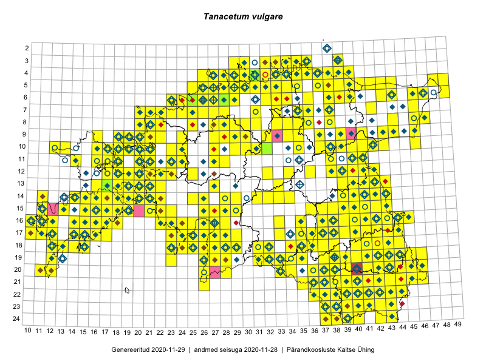

Tanacetum vulgare
Uuendatud: 2016-12-01
Kaardile koondatud taksonid: Tanacetum vulgare L.

Kaart põhineb 634 kirjel.
Kuvatud viited 20 esimesele andmebaasikirjele, ülejäänud PlutoFis
- Malle Leht: 2015-05-22: : ala
- Malle Leht: 2015-05-16: : ala
- Peedu Saar, Timo Luhamäe: 2015-05-13: 06-40: ala
- Toomas Kukk, Thea Kull, Timo Luhamäe, Ott Luuk, Peedu Saar: 2015-06-29: 14-17: ala
- Thea Kull: 2015-07-07: 16-40: ala
- Malle Leht: 2015-08-02: : ala
- Peedu Saar, Liina Oja: 2015-05-21: 16-24: ala
- Peedu Saar, Liina Oja: 2015-05-20: 18-28: ala
- Peedu Saar, Liina Oja: 2015-05-20: 18-26: ala
- Toomas Kukk, Eerik Leibak: 2015-08-09: 14-15: ala
- Toomas Kukk, Indrek Tammekänd: 2015-05-09: 13-27: ala
- Peedu Saar, Toomas Kukk: 2015-05-26: 10-17: ala
- Peedu Saar: 2015-05-01: 16-42: ala
- Peedu Saar: 2015-05-01: 16-42: ala
- Rein Kalamees, Kersti Püssa: 2015-08-31: 04-32: ala
- Rein Kalamees, Kersti Püssa: 2015-09-06: 03-32: ala
- Rein Kalamees, Kersti Püssa: 2015-08-04: 03-33: ala
- Rein Kalamees: 2015-09-03: 05-32: ala
- Rein Kalamees, Kersti Püssa: 2015-09-02: 03-36: ala
- Toomas Kukk, Raivo Kalle: 2015-05-12: 11-40: ala